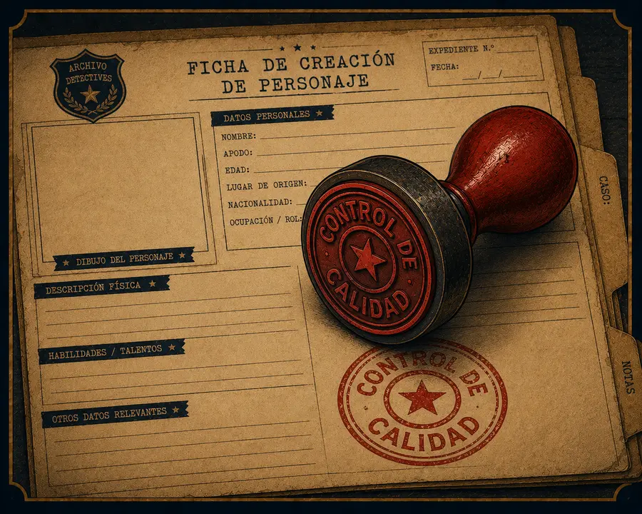

Saltar al contenido principal
Detectives de Mitos
¿Dónde están los héroes y heroínas hoy?
🔊 Escuchar audio
🗂️ Expediente del caso
CASO N.º 001-10 — CONTROL DE CALIDAD (OA5)
Autoevaluación: Rúbrica Interactiva
Objetivo de esta pantalla:
evaluar el propio informe final antes de entregarlo, revisando adecuación, cohesión y ortografía.
📋
Actividad 11 — Rúbrica de Autoevaluación
Criterio
Excelente (Logrado)
En Proceso (Bueno)
Por Mejorar
Adecuación del Perfil
El personaje resuelve un problema actual y está descrito con adjetivos y verbos precisos.
El personaje es claro, pero faltan recursos descriptivos para caracterizarlo mejor.
El personaje no se ajusta a un problema actual o carece de descripción.
Cohesión y Estructura
Las ideas están conectadas lógicamente y siguen la estructura del relato épico.
Hay una secuencia lógica, aunque algunos saltos en la narración confunden el relato.
El texto presenta ideas sueltas sin una conexión clara entre ellas.
Ortografía y Gramática
El texto no presenta errores de ortografía y utiliza correctamente las categorías gramaticales.
Presenta errores ortográficos menores que no afectan la comprensión del informe.
Los errores ortográficos o gramaticales dificultan la lectura del perfil.
Cerrar control de calidad
✅
Lista de Cotejo — Últimos detalles
Mi héroe/heroína tiene un nombre y resuelve un problema actual claro.
Usé al menos tres adjetivos para describirlo/a.
Incluí un llamado, una prueba y una transformación (Viaje del Héroe).
Revisé la ortografía y la tildación de mi texto.
Leí mi informe en voz alta para comprobar que las ideas se conectan (cohesión).

⟵ Anterior
Siguiente ⟶
🔎
✕